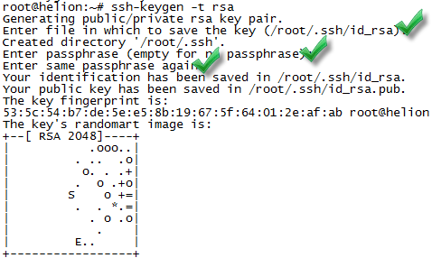
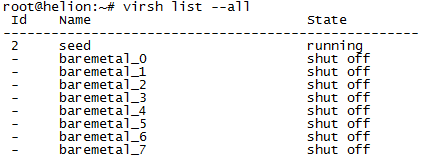

Helion OpenStack Community Edition (Virtual)
This guide is based on Helion Community Edition 1.4 on Ubuntu 13.10 and the install process follows this guide.
Introduction
We will start with a clean server install which meets the minimum hardware requirements as listed here. If you run into any issues during the install you can post questions here. The exact install process we will follow is here.
Before you begin to install, you may wish to verify the MD5 hash of your software. Below are the MD5 hash values for this guide:
| Software Name | MD5 Hash |
|---|---|
| Ubuntu 13.10 | linked here |
| HP Helion CE 1.4 | e397c2795359d959376e9f3b2fe276e4 |
Host Ubuntu Setup
In this section we will setup Ubuntu before we start installing Helion. First we create our SSH private and public keys then we follow with next section on seed creation.
ssh-keygen -t rsa (just press enter three times)
Log in as root user and install the required prerequisites.
apt-get install -y qemu-system-x86 qemu-kvm openssh-server
Reload once done.
Seed Setup
In this section we will stage the Helion CE software and extract to our root folder. Once we have the code staged we will proceed to run the script which sets up the seed VM. This is used to act as bare metal provisioning for undercloud and overcloud.
Staged the code via SCP or other transfer method to the root folder on the host. Once its staged, you want to extract with the following command.
Run setup script:
When its finished sucessfully, you will want to verify VMs are created as shown below.

Also make sure you understand the interfaces created and how they are bound together.

Underclound & Overcloud Setup
The section we will be on the seed VM running one last script which will deploy the undercloud onto one of the baremetal-VMs shown earlier with the virsh list command.
Log into the seed VM.
Set the envirnment variables for NTP and DVR.
Run setup script: